Based on Image Processing Towards a Plant Digital Twin
Author
Amirali Rouhi
Supervisor
Dr. Bijan Moaveni
Date
September 2026
Engineered architectures integrating computational algorithms with physical processes to autonomously monitor and control complex environments.
High-fidelity virtual replicas of physical entities that continuously update via real-time sensory data to simulate, predict, and optimize physical behaviors.
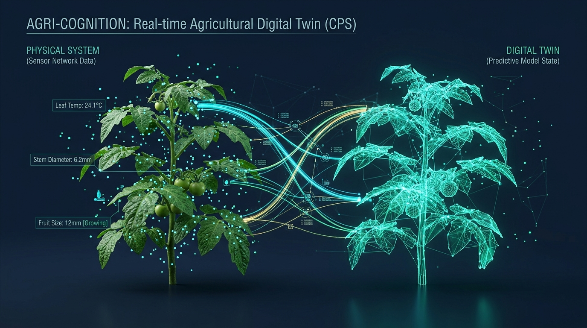
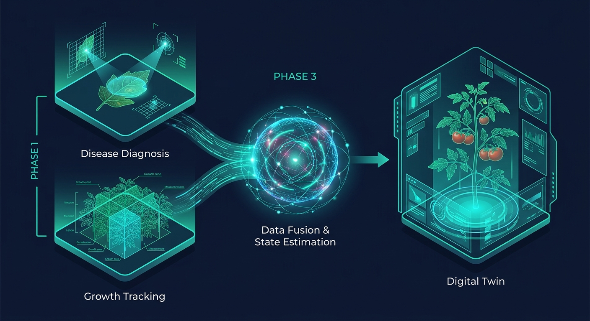
Subsystem 1
Core Objective
Develop a robust CNN pipeline capable of identifying microscopic biological stress in plant leaves.
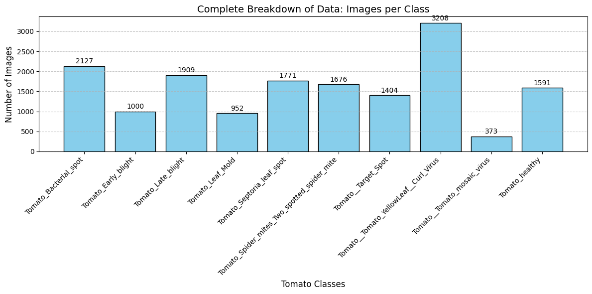
Isolation of the primary biological subject from complex backgrounds to prevent the network from learning irrelevant environmental features.
Utilizing thresholding and morphological operations to generate clean boundaries around the leaf structures while preserving critical biological textures.
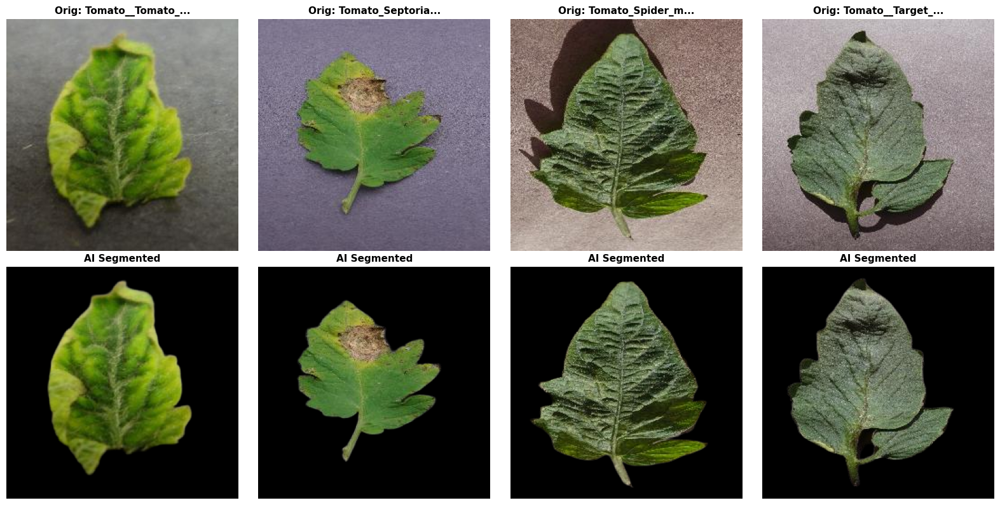
Application of Contrast Limited Adaptive Histogram Equalization to normalize varied lighting conditions.
Improving the visibility of microscopic pathogenic features without amplifying latent image noise.
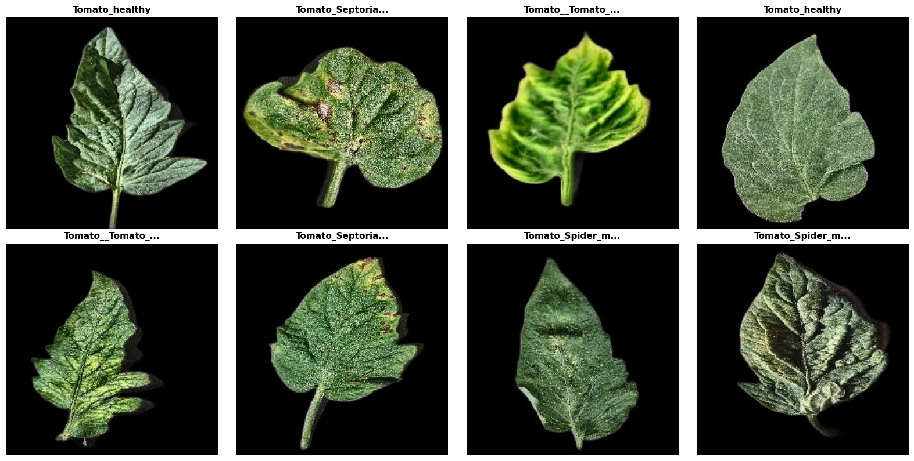
(None, 224, 224, 3) for the classification core.Dynamic class weights applied to the cross-entropy loss function to penalize dominant classes:
Where K = 10 classes, Ntotal = 16,011, and Ni = samples in class i
Dynamic model factory engineered to standardize initialization for EfficientNetB0, ResNet50, and MobileNetV2.
[-1, 1] range.0.2) appended to prevent overfitting.RAM-Safe disk caching (tf.data.AUTOTUNE) applied across 10 Epochs. Optimal network weights preserved strictly via save_best_only callbacks.
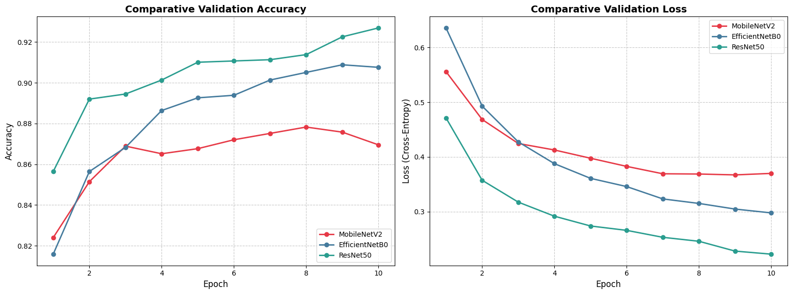
Red: MobileNetV2 | Blue: EfficientNetB0 | Green: ResNet50Note: MobileNetV2 was eliminated due to baseline underperformance. Fine-tuning proceeded exclusively with EfficientNetB0 and ResNet50.
Only the top 30 layers of the base architectures were unlocked. This prevents "catastrophic forgetting" of foundational ImageNet edge/color detectors while adapting deep layers to pathology features.
Recompiled using the Adam optimizer with a drastically reduced micro-learning rate of 1e-5. Ensures weight updates are subtle and controlled on the loss landscape.
Integrated ReduceLROnPlateau (factor=0.2) to squeeze residual gains, and EarlyStopping (patience=4) to halt training and restore the absolute optimal weights to prevent overfitting.
EfficientNetB0 achieved near-perfect per-class precision, including:
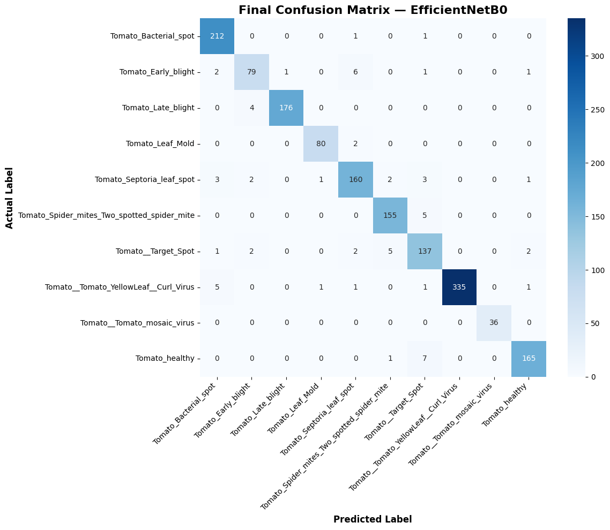
Generated via Scikit-Learn & SeabornPrimary Diagnostic Engine Selected
Outperformed ResNet50 in both global accuracy (95.94% vs 94.44%) and critical macro-average F1-Scores across all 10 pathogen classes.
Significantly lower parameter count ensures computationally lightweight, rapid inference—a strict prerequisite for integration into the closed-loop Digital Twin.
Subsystem 2
Core Objective
Continuously monitor the macroscopic structural expansion of the plant canopy to determine precise biological growth rates.
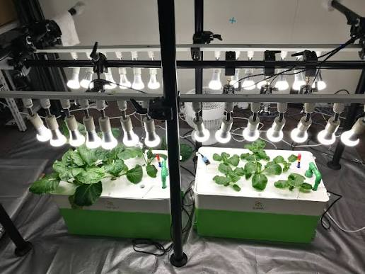
Flattened dynamic JSON annotations into unified 2D binary masks. Cached locally as lossless PNGs to completely eliminate CPU parsing bottlenecks during network training.
Tensors dynamically resized to 256×256. NEAREST_NEIGHBOR interpolation applied strictly to masks to prevent pixel blending and preserve absolute binary (0/1) leaf edges.
Maintained strict 1:1 image-mask alignment via fixed-seed shuffling. 1,080 total samples sequentially partitioned into: Train (864), Val (108), and Test (108).
Loaded all splits directly into RAM via .cache() to bypass disk read latency. Tensor mapping and background batching accelerated asynchronously using tf.data.AUTOTUNE.
Contraction: Sequential 3x3 convolutions and 2x2 max-pooling extract high-level semantic context.
Expansion: Transposed convolutions restore spatial resolution.
Skip Connections: High-frequency spatial details bypassed directly to the decoder to preserve finite canopy boundaries.
A modular conv2d_block was engineered utilizing he_normal variance scaling and ReLU activations, mathematically preventing vanishing gradients during the deep convergence of the 9-block architecture.
The terminal layer utilizes a 1x1 convolution with a Sigmoid activation, mapping the feature space to a 256x256x1 tensor where each pixel represents a continuous probability of belonging to the plant canopy class.
Standard accuracy is inherently misleading in segmentation due to background dominance. The model was strictly optimized and evaluated utilizing BinaryIoU (Intersection over Union) to measure physical mapping precision.
Engineered to strictly monitor val_iou (not loss) in max mode. Guaranteed saved weights represented the epoch with the highest physical boundary overlap with ground-truth data.
Early Stopping deployed on val_loss (patience=7). The network naturally halted at Epoch 37 after peaking, automatically triggering restore_best_weights to roll back to the Epoch 30 peak.
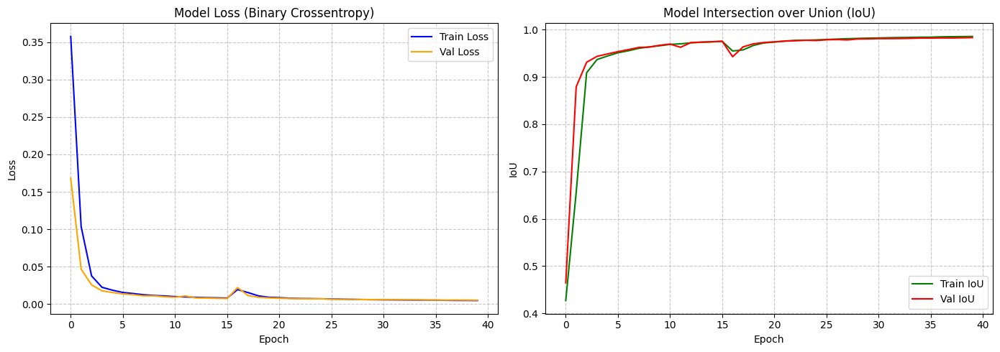
Generated via Matplotlib demonstrating stable optimization convergenceGlobal pixel accuracy (99.78%) is an illusion driven by massive background arrays. The pipeline relies strictly on spatial overlap metrics (IoU & Dice) to penalize false boundaries.
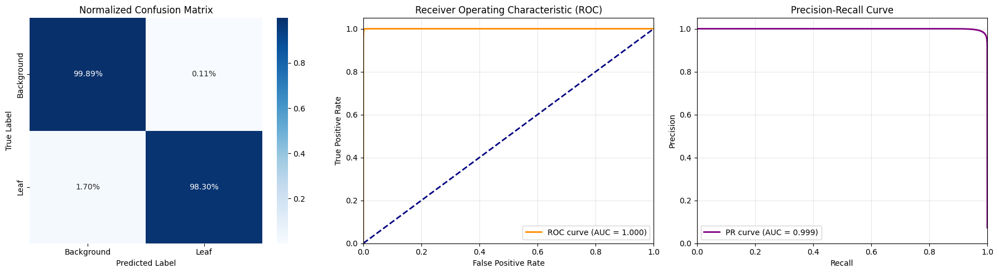
Note: CM mathematically normalized row-wiseFinal Stage
Raw U-Net pixel counts contain frame-to-frame noise. A 1D Discrete Kalman Filter was engineered to track the true biological state vector: Canopy Area (position) and Growth Velocity (rate of biomass expansion).
Predict-Update Transition Matrix
The filter dynamically balances the Measurement Noise (R) from the U-Net sensor inaccuracies against the Process Noise (Q), which mathematically models unpredictable natural biological accelerations.
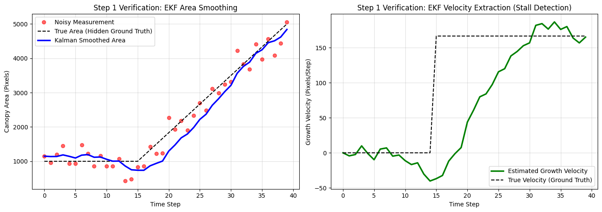
Generated via Matplotlib demonstrating Stalled Growth vs Optimal GrowthBecause a plant physically cannot shrink significantly overnight, the system continuously compares the U-Net's raw area against the previously smoothed area.
To prevent environmental controls from overreacting to a single false-positive classification, the Orchestrator maintains a rolling memory of the last 5 frames. A disease is only recognized if it secures a strict majority vote (≥3).
The DigitalTwinController acts as the brain of the greenhouse, applying rule-based logic to the filtered biological telemetry to autonomously modulate Temperature and Electrical Conductivity.
If the Kalman Gate detects a massive area drop, instantly freeze all environmental changes and rely entirely on the Extended Kalman Filter's mathematical predictions until vision is restored.
If the debounced EfficientNetB0 state flags a pathology (e.g., Late Blight), immediately drop the nutrient EC to choke fungal/bacterial spread, respecting a hard safety floor (EC = 1.0).
If the Kalman Filter detects a growth velocity ≤ 0 (stagnation) in an otherwise healthy plant, autonomously increase the ambient temperature by 1.0°C to jumpstart metabolic activity.
If biological velocity returns to positive (growth is expanding normally), slowly taper the environmental variables back to baseline to conserve greenhouse energy.
To simulate a live hydroponic environment, the pipeline zips two distinct datasets into a perfect 1:1 temporal sequence: Overhead Spatial Camera (Komatsuna for biomass) and a Macro Diagnostic Camera (PlantVillage for pathology).
To validate the DigitalTwinController's logic, the plant must experience biological distress. The pipeline autonomously cycles through all 9 disease classes (Frames 15-59) to prove the controller accurately drops EC to suppress fungal spread, before entering a final healthy recovery phase.
At Frame 65, the script explicitly injects a corrupted, pitch-black image—simulating a camera signal loss. This stress-tests the Kalman Gate, proving it instantly rejects the mathematically impossible data and perfectly stabilizes the control loop using purely predicted physics.
The true test of a Digital Twin is its ability to translate biological telemetry into physical intervention. The dashboard maps the Environmental Controller's output—specifically the Electrical Conductivity (EC)—along a synchronized chronological X-axis.
The telemetry definitively proves that the instant the AI detects a biological threat via the macro camera, the orchestrator autonomously drops the EC to 1.0 to starve the pathogen, restoring it only when the recovery phase is secured.
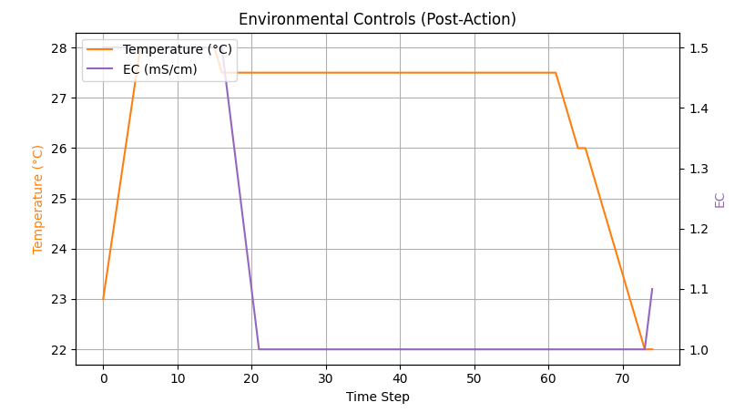
Matplotlib: Time Step vs EC (mS/cm)Rather than randomly sampling frames, the system actively parses the telemetry array to pinpoint exact "State Transitions"—the precise time steps where the EfficientNetB0 model changed its diagnostic prediction (indicated by dashed red transition lines).
String-based disease labels were mapped to discrete Y-axis coordinates and plotted chronologically. This visualizes the system systematically navigating through all 9 injected pathology classes before cleanly returning to the healthy baseline.
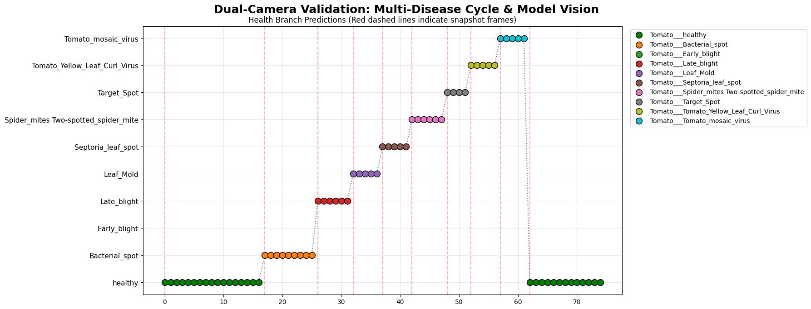
Matplotlib: Disease Class vs Time StepActions mapped to integers (0=Optimal, 1=Stall, 2=Disease, 3=Anomaly)
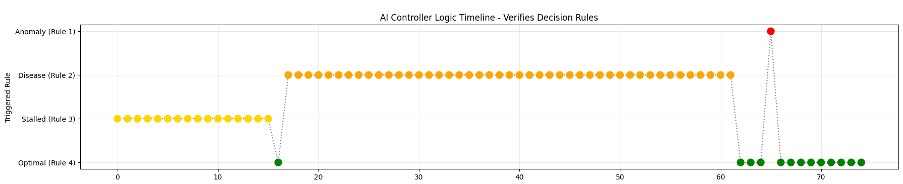
Isolates the max EKF residual error to verify confused frames
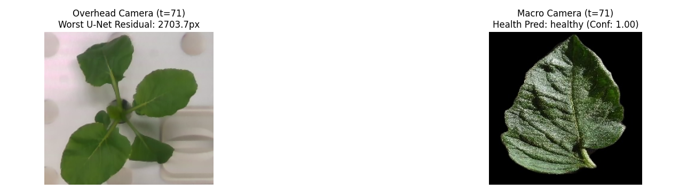
To visualize exactly where the model is "confused," an uncertainty mapping algorithm extracts the continuous probability tensor (P) and calculates the absolute divergence from a 0.5 guess:
This topological map proves confidence is absolute across the bulk canopy, wavering only at sub-pixel overlapping leaf boundaries.
To interpret the diagnostic branch, Gradient-weighted Class Activation Mapping (Grad-CAM) was implemented using tf.GradientTape. By pooling the mathematical derivatives flowing backward from the final prediction to the last spatial convolution, the script visually isolates the physical leaf regions (e.g., fungal spots) that triggered the classification.
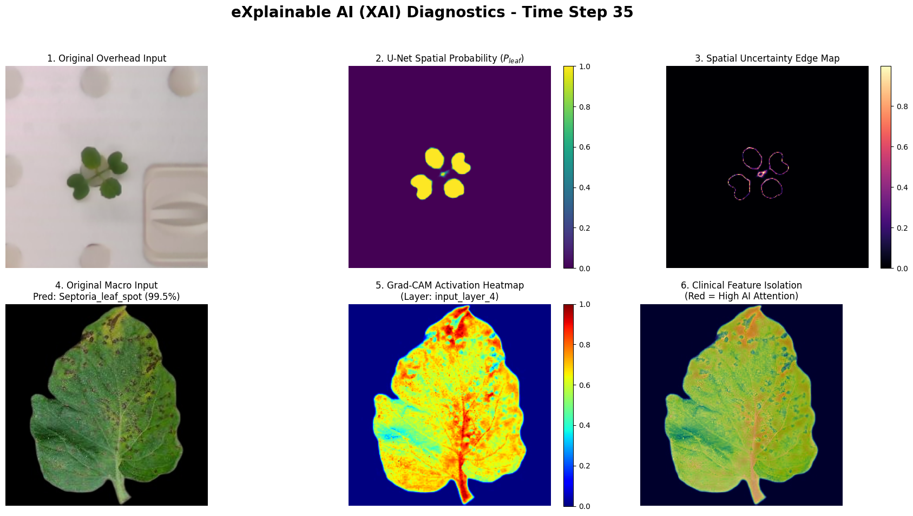
Top: U-Net Probability/Uncertainty | Bottom: Grad-CAM Superimposed Clinical IsolationSuccessfully transitioned from isolated, passive computer vision to an active, autonomous closed-loop Digital Twin.
Fused deep neural networks with Extended Kalman Filtering to mathematically stabilize noise and autonomously reject catastrophic hardware failures.
Secured system trust by deploying Grad-CAM and Spatial Uncertainty maps to visually audit the neural networks' internal logic.
Evolving beyond 2D U-Net segmentation by integrating RGB-D sensors (e.g., Intel RealSense) and Point Cloud generation to resolve biological leaf-overlap limitations.
Replacing the deterministic rule-based controller with Model Predictive Control (MPC) and DRL to autonomously optimize the thermodynamic energy-to-growth ratio.
Applying network pruning and TensorRT quantization to deploy the pipeline natively on low-power industrial Edge hardware (NVIDIA Jetson / Google Coral TPU).
Questions & Discussion
Amirali Rouhi
K. N. Toosi University of Technology